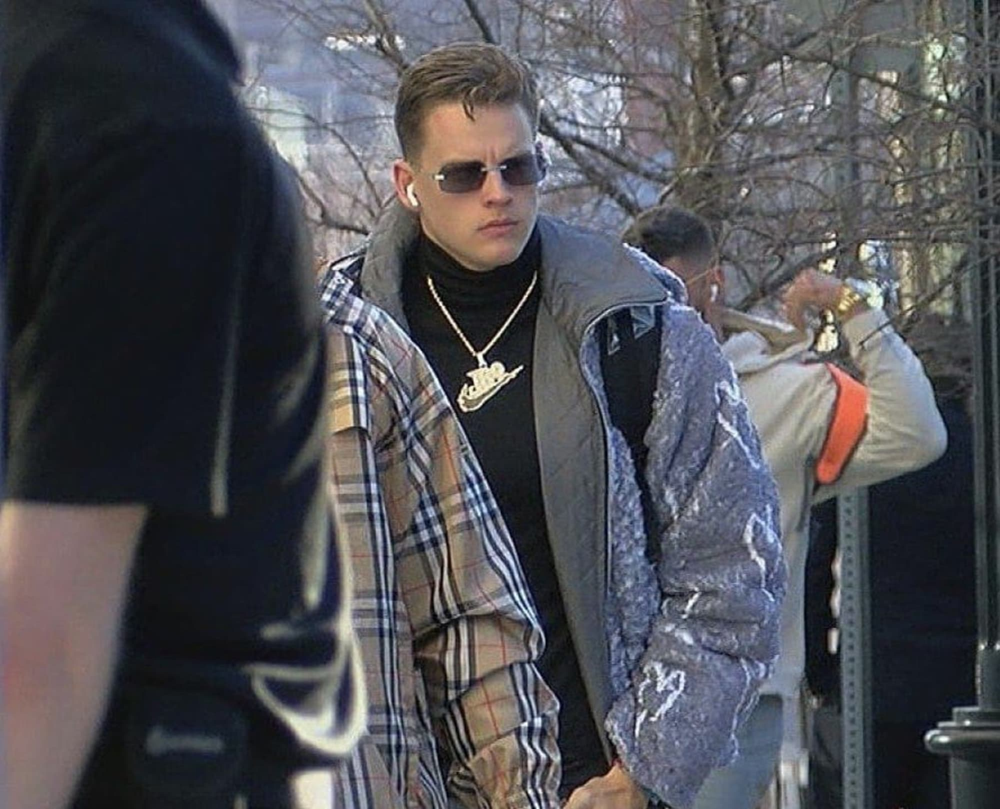

My name is Austin Hendricks. I am a university student in Ohio who is currently taking a Web Applications project course through my school.
However, that course is moving at an incredibly fast pace, so I have come to Coursera to help supplement my learning. This is my very first taste of web programming!
I am an aspiring computer scientist looking to graduate college in May of 2023. I love everything related to cybersecurity and computer netoworking, and hope to enter into one of those fields!
If you've somehow stumbled upon this page, lucky you! You've found my very first website. Hopefully there will be several more where this came from in the future.
I have lots of hobbies. Here are a few of them ranked in order!
I grew up playing basketball and baseball year-round, but nowadays I love to watch football the most! Here is a list of my favorite teams in the NFL and NCAA, as well as my favorite baseball team.
Here is my favorite photo of the Cincinnati Bengals quarterback, Joe Burrow, rolling up to the 2022 AFC Championship game in Kansas City to beat out Mahomes and the Chiefs, 27-24.
Just check out that fit — this man is icy. There's a reason we call him Joe Brrr! 🥶
"Would I rather be feared or loved? Easy. Both. I want people to be afraid of how much they love me." - Michael Scott
Follow me on LinkedIn here!
Check out my Instagram here!
Take a look through my GitHub here!
And, if you so desire, watch me hit golf balls on my Golf Instagram here!